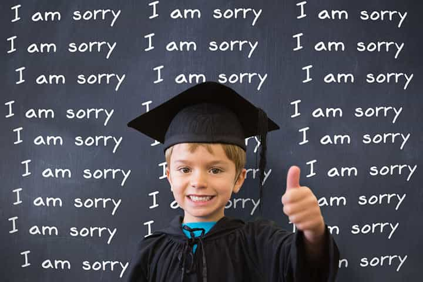

“Author” and attention-seeking SJW Angela Nagle has been caught plagiarizing Wikipedia and Rational Wiki in her book Kill All Normies, including stealing parts of Roosh’s Wikipedia page. Nagle’s rambling tome, which basically attacks anyone who isn’t a social Marxist as a white supremacist and/or misogynist, received effusive praise from the mainstream media.
In addition to its plagiarism, Kill All Normies is a textbook case of false sincerity. Nagle feigns self-consciousness, attributing the rise of people like Trump to a backlash against bizarre SJW ideologies, ideologies she herself largely endorses but pretends not to follow. Unable to contain her hatred for long, however, she then dives into the familiar and disingenuous spiel of “All our non-leftist opponents are white supremacists and Nazis.”
While ROK hardly needs the support of left-wing media outlets to make a point, we note that The Daily Beast, an otherwise odious publication, is also drawing attention to Nagle’s atrocious attribution of sources and outright plagiarism.
An elementary school student’s idea of plagiarism

The initial complaints over the copy-and-paste effort of Angela Nagle came from Libcom, a sort of communist blog run by Mike Harman. In one example about Russian political theorist Aleksandr Dugin, Harman notes how she stole information from Wikipedia and presented it as her own. She writes (p. 121):
On Radix Journal they draw on the idea of the ‘The Fourth Political Theory’, with reference to the Russian theorist Aleksandr Dugin and the French New Right’s Alain de Benoist, an entirely new political ideology that integrates and supersedes liberal democracy, Marxism and fascism.
The original Wikipedia entry read:
In the book, Dugin states that he is laying the foundations for an entirely new political ideology, the fourth political theory, which integrates and supersedes the three past “theories” of liberal democracy, Marxism, and fascism.
Even if some people think that plagiarism is actually a copy-and-paste job of sentences in full, this lifting by Nagle is still about as egregious and blatant as it gets. A high school senior or college freshman would have been failed for this kind of academic fraud in an essay.
Nagle plagiarized her references to Roosh as well
Joining the throng of female journalists who have obsessively raged about Roosh, Nagle went one step further and copied Wikipedia to describe him in her book. As The Daily Beast confirms:
When Nagle writes that, “Roosh V doesn’t identify with equality-based men’s rights activism or the MGTOW movement, calling them ‘sexual losers’ and ‘bitter virgins,” that too is parroting his Wikipedia entry.
As a result, should any of us be surprised when typist after typist slanders Roosh as being “pro-rape”? If some among their number need Wikipedia to write for them, it’s little wonder that they cannot (or refuse to) recognize his familiarity with the satirist Jonathan Swift.
Like I have said in the past, Roosh’s biggest and, in fact, only “crime” is to have taught men how to get laid and to avoid broken leftist women in the mould of Angela Nagle. In return, he is ridiculously and falsely portrayed as a brown man’s fascist. Considering her undeniable penchant for plagiarism, perhaps Nagle’s rage got in the way when she was writing her book.
The hilarious Kony 2012 campaign is another topic in Kill All Normies that has been outsourced to Wikipedia, just as she outsourced her description of A Voice for Men founder Paul Elam to Rational Wiki. But hey, the only thing better than defaming or criticizing your opponents as misogynists or white supremacists is plagiarizing others to defame or criticize them for you!
When the media becomes fawning sycophants
All aboard the SJW circle jerk!
Though it is not possible for an individual reviewer to uncover every example of plagiarism in the books they write about, the left’s obsession with ideology over facts and rationality explains its reluctance to publicize Angela Nagle’s plagiarism. Its regular hit jobs on non-leftists aside, The Daily Beast at least had the integrity to call out the farce (or it was simply punishing Nagle for allegedly being “transphobic”).
Vice’s flattering review of Kill All Normies, for instance, will almost certainly not be accompanied by a subsequent and proper examination of the now confirmed plagiarism. That would clearly be asking for way too much. In the meantime, anyone who contravenes SJW orthodoxies can expect to be vilified and demonetized in order to silence them.
Read More: Wikipedia Is A Dire Warning Of What Happens When You Let Social Justice Freaks Take Over